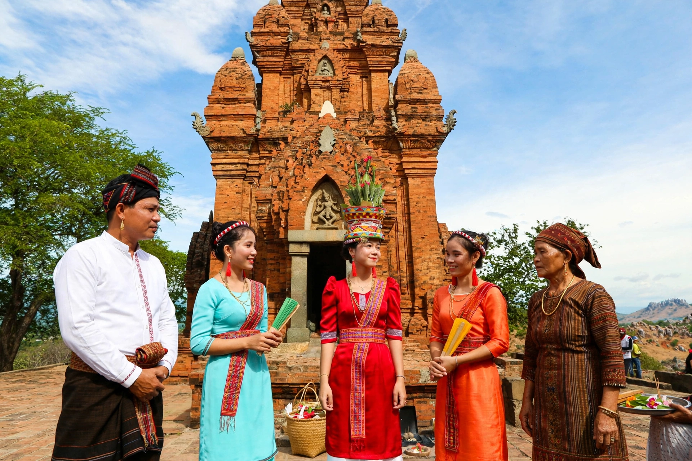

| Population | About 400,000-500,000 (estimate) |
|---|---|
| Regions | Vietnam, Cambodia, Malaysia, Hainan |
| Languages | Cham, Vietnamese, Khmer, Malay, Tsat |
| Religions | Islam, Hinduism (Balamon), Bani, folk religion |
The Chams are an Austronesian ethnic group indigenous to central and southern Vietnam and Cambodia, descendants of the people of Champa, maritime kingdoms that flourished from roughly the 2nd to the 19th century.
History
Champa developed through Southeast Asian trade and adopted Indian cultural elements including Hinduism and Sanskrit inscriptions. It contested territory with expanding Vietnamese states and the Khmer Empire. After the fall of Vijaya in 1471 and annexation of remaining territory in the 19th century, many Chams migrated to Cambodia and elsewhere.
Culture
Cham culture retains weaving, pottery such as that of Bau Truc village, music, dance and brick temple towers. Traditional society has strong matrilineal elements.
Religion
Chams are diverse: many practise Islam; the Bani are a distinct Muslim-influenced community; the Cham Balamon preserve a form of Hinduism centred on festivals such as Kate.
Language
Cham, a Chamic Austronesian language, is written in the Indic-derived Akhar Thrah script and in Arabic-based and Latin scripts.